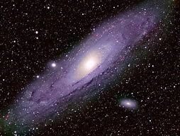
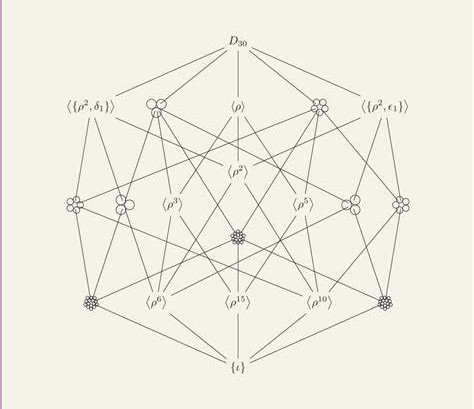

Summer of Science Projects 2017

Basic Astronomy
This report by Ajay Dangi gives a brief description about history of astronomy and the mathematics involved in astronomy.It also provides an introduction to calendars and star gazing for beginners.
This report by Ajay Dangi gives a brief description about history of astronomy and the mathematics involved in astronomy.It also provides an introduction to calendars and star gazing for beginners.

Abstract Algebra
The mathematics of group theory has always been so interesting and the roots of this theory is linear algebra (Matrices). Rahul Punia explores various ways to explain group theory and different kind of groups.
The mathematics of group theory has always been so interesting and the roots of this theory is linear algebra (Matrices). Rahul Punia explores various ways to explain group theory and different kind of groups.
Machine Learning
Algorithms in machine learning and some applications covering analysis of each rigorously. Learning how to perform data mining, clustering using supervised unsupervised learning algorithms. Naman Jain studies explores the growing field of machine learning.
Algorithms in machine learning and some applications covering analysis of each rigorously. Learning how to perform data mining, clustering using supervised unsupervised learning algorithms. Naman Jain studies explores the growing field of machine learning.